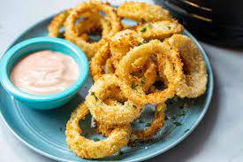

Onion-rings

These Air Fryer Onion Rings start off with sweet onions, are breaded and air fried, then served with a quick French fry dip.
Ingrediants
- 3 medium sweet yellow onions
- 1 cup all-purpose flour
- 2 tablespoons cornstarch
- 1 teaspoon kosher salt
- 1 teaspoon black pepper
- 3/4 cup milk
- 4 cups panko breadcrumbs
Method
- Prepare the onion rings
- Make the breading station
- Bread the onion rings
- Air fry the onion rings
- Serve the onion rings
Back to home page